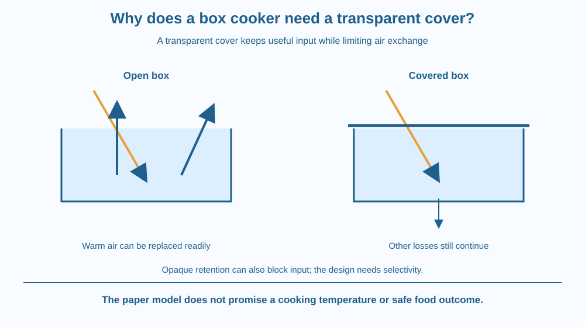

Explain how a transparent cover can improve a box solar cooker's energy balance. Distinguish admitting sunlight from limiting warm-air exchange. Recognise continuing losses and avoid the false picture that every infrared photon is trapped forever or that a cover guarantees safe cooking performance.
An open dark box can absorb sunlight, yet moving air can carry some of its thermal energy away. A transparent cover changes the enclosure while still allowing useful solar input to reach the interior.
Why not use an opaque insulated lid instead? It could reduce some losses but also block much of the incoming sunlight. A useful design needs both input and retention.
The question is how the cover changes the pathways. Its value is not simply that glass is special or that an enclosed box automatically reaches a fixed temperature.
A box solar cooker contains an absorbing interior and an enclosure intended to direct solar energy into useful heating. Some designs use reflectors to increase input, but the central comparison here is open versus covered under otherwise similar illumination.
A suitable transparent cover transmits much useful sunlight into the box. The interior absorbs part of that energy. A cover that blocks too much input would weaken the source side of the balance.
The cover also reduces direct exchange of warm interior air with cooler outside air. This limits one important convective loss route, especially when external airflow would otherwise replace the warmed air readily.
The enclosure still loses energy. Heat transfers through the cover and walls, and the cover exchanges energy with the surrounding air and sky. Insulation around suitable parts of the box can reduce other losses but does not make them vanish.
Glass has wavelength-dependent radiation properties, so radiative exchange can also be affected. However, the statement all infrared is permanently trapped is false. Absorption, emission and transfer through a real cover continue.
This differs from the main planetary CO2 greenhouse mechanism. An ordinary box cover physically limits air exchange, while atmospheric greenhouse warming depends on radiation transfer through gases. The shared everyday word greenhouse should not hide that distinction.
The useful temperature depends on incoming sunlight, losses, load and time. Adding a cover cannot guarantee one cooking temperature under all weather and food conditions. We therefore give no promised cooking duration or food-safety claim.
A box cooker is not automatically a pressure cooker. The educational enclosure model does not prescribe sealing a vessel or building a hot apparatus. Actual designs and food use require suitable tested equipment and responsible adult operation.
Draw an open box with sunlight entering and warm-air arrows leaving. In a second picture, add a transparent cover and reduce the direct air-exchange arrows while keeping incoming radiation visible.
Add continuing loss arrows through cover and walls. The model should show improvement of one route, not a magical boundary that stops every energy transfer.
Now replace the transparent cover with an opaque lid in a thought experiment. Some retention may improve, but input changes too. This comparison explains why a successful design must consider the whole balance rather than optimise only one side.
The SVG compares open and transparent-covered boxes under equal illustrative sunlight. Air-exchange arrows are larger in the open model. The covered model still shows wall, cover and radiation losses.
A separate opaque-lid inset reduces the sunlight input and identifies the trade-off. The colours show pathways, not measured temperatures. No real performance values are printed.
The diagram is not a construction plan. It includes no focusing activity, hot vessel or food experiment. Its caption distinguishes convective enclosure effects from the gas-radiation mechanism of planetary greenhouse warming.

Solar cooker education in India often introduces a dark interior, insulation, a cover and sometimes reflectors. Each feature has a different job, and explaining them separately produces a better design account than saying all parts trap heat.
A reflector can create glare or concentrated illumination, so it is not needed for this activity. Students should not experiment with mirrors in sunlight, climb onto roofs or handle a hot cooker.
A classroom model also cannot establish that food reached a suitable temperature throughout. Understanding the heat balance is distinct from validating an actual cooking process under its specific conditions.
Use paper and two colours. No sunlight, container heating or food is needed.
Label every arrow qualitative. Ask a partner which route the transparent cover mainly changes in the comparison and why the covered model still cannot warm forever. The exercise tests energy-pathway reasoning without a practical cooking trial.
Why can the best retention barrier fail as a solar design if it blocks the required input? State the competing functions rather than treating insulation as a universal answer.
Now imagine strong wind outside a covered box. Which losses may still change even though direct interior-air replacement is reduced? A boundary can suppress one transfer pathway while remaining coupled to its surroundings through others.
What useful input does a suitable transparent cover admit?
Answer: A — Transmission allows solar energy to enter while the enclosure changes air exchange.
Why can the cover reduce a major loss route?
Answer: B — The enclosure reduces convective exchange with outside air in the comparison.
A cartoon shows every infrared photon trapped forever. What needs correction?
Answer: C — Losses through and around the cover continue, so total permanent trapping is not an accurate model.
Create a labelled cover-design argument with sunlight transmission, reduced air exchange and continuing losses. Include the opaque-lid counterexample.
Your conclusion must avoid total-infrared-trapping language and a guaranteed cooking time. State that the diagram is a mechanism model rather than a student construction or food-safety test. The goal is to explain why transparency and enclosure work together.
A good cover must allow one energy route while restricting another. Perfectly blocking everything would also block the source the device depends on. Selectivity, not total isolation, is the useful engineering idea behind the transparent enclosure.
A transparent cover admits solar input while limiting warm-air exchange; other losses continue, so performance follows the whole energy balance rather than permanent heat trapping.